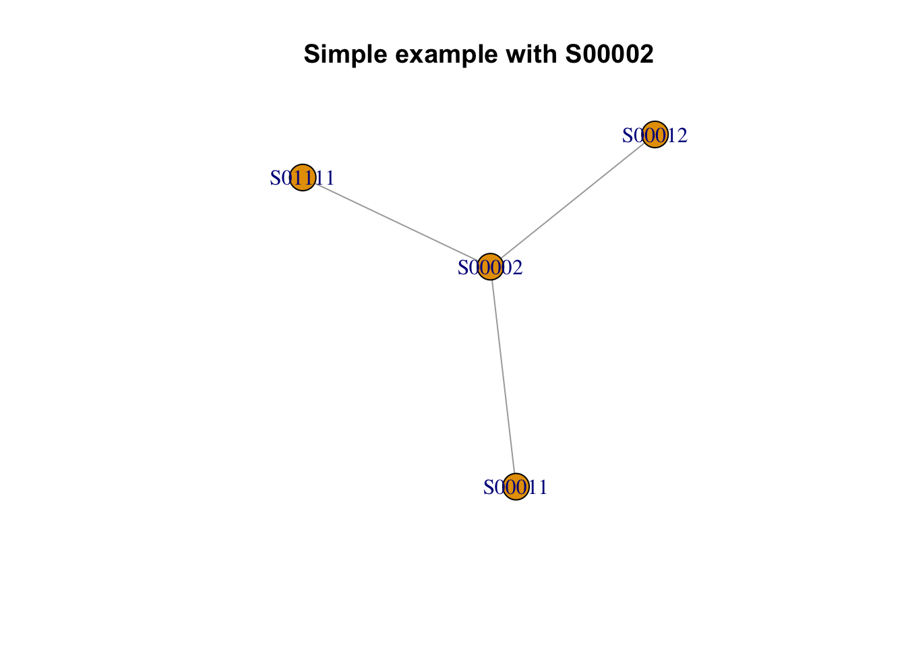

Creating networks in RStudio are very easy. Let take the street segment S00002 as an example, you will notice that its connected to 3 other streets S00011, S00012 and S01111.
S00002, S00011, S00012 and S01111.are streets which are referred to as nodes
We know the following things about S00002 if will filter this observed value in R’s data viewer. We see the following:
S00002 -> S00011S00002 -> S00012S00011 -> S00002S00012 -> S00002S01111 -> S00002These are all the connections S00002 has in that data frame. Note, that S00002 -> S00011 & S00011 -> S00002 as well as S00002 -> S00012 & S00012 -> S00002 are essentially the same and therefore one becomes redundant in that list. Hence, the list is reduced to:
S00002 -> S00011S00002 -> S00012S01111 -> S00002The above connections listed (or street segment intersecting with each other) are referred to as edges. We can generate the above and form a simple network using the graph() function from the igraph package. In this function, we provide the list of edges in the graph() function.
Here, you list the connections in the edges argument and say its an undirected network by declaring FALSE
Here’s an example:
# create network structure for the four street segments
g1 <- graph(edges=c("S00002","S00011", "S00002","S00012", "S01111","S00002"), directed = FALSE)
# view the text output
g1## IGRAPH c85c8df UN-- 4 3 --
## + attr: name (v/c)
## + edges from c85c8df (vertex names):
## [1] S00002--S00011 S00002--S00012 S00002--S01111# view network structure
plot(g1, main = "Simple example with S00002")
Let’s build upon this structure focusing street S00012 and its connections to other roads in the network. When you filter this street segment in the data viewer, you will see its linked to the following:
S00002 -> S00012 *S00011 -> S00012 **S00012 -> S00002 *S00012 -> S00011 **S00012 -> S00013S00012 -> S00014S00017 -> S00012We have already establish this connection: S00002 -> S00012, and one of these S00011 -> S00012 or S00012 -> S00011are redundant. Therefore, the list is reduced to:
S00012 -> S00011S00012 -> S00013S00012 -> S00014S00017 -> S00012We can expand this current network defined in g1 with the information for S00012. The code will look as follows:
# create network structure for the four street segments
g2 <- graph(edges=c("S00002","S00011", "S00002","S00012", "S01111","S00002",
"S00012","S00011", "S00012","S00013", "S00012","S00014", "S00017","S00012"), directed = FALSE)
# view the text output
g2## IGRAPH 08dc90e UN-- 7 7 --
## + attr: name (v/c)
## + edges from 08dc90e (vertex names):
## [1] S00002--S00011 S00002--S00012 S00002--S01111 S00011--S00012 S00012--S00013 S00012--S00014 S00012--S00017# view network structure
plot(g2, main = "Expanded example with S00002 and S00012")You catch the drift in terms of knowing how to build a network structure. Suppose if you were to include the connections from other nodes such as S00011 (see by filter) you have to expand the network further to include the 11 other connections. Now, imagine doing this for all 81 street segments - the tasks of data entry because incredibly arduous. Of course, this tutorial will spare you from that pain.
The objects g1 and g2 are network object created from the igraph package. You can see details of the object with quick functions such E(), V() and NetworkObjectName[]. Here, is an example:
# The edges of the g2
E(g2)## + 7/7 edges from 08dc90e (vertex names):
## [1] S00002--S00011 S00002--S00012 S00002--S01111 S00011--S00012 S00012--S00013 S00012--S00014 S00012--S00017# The list of nodes forming g2
V(g2)## + 7/7 vertices, named, from 08dc90e:
## [1] S00002 S00011 S00012 S01111 S00013 S00014 S00017# You can examine the network matrix directly, which is more intuitive read for connections
g2[]## 7 x 7 sparse Matrix of class "dgCMatrix"
## S00002 S00011 S00012 S01111 S00013 S00014 S00017
## S00002 . 1 1 1 . . .
## S00011 1 . 1 . . . .
## S00012 1 1 . . 1 1 1
## S01111 1 . . . . . .
## S00013 . . 1 . . . .
## S00014 . . 1 . . . .
## S00017 . . 1 . . . .NOTE: The network matrix is akin to a neighbourhood matrix (or adjacency matrix). It also tells the use the which items are linked when a cell is 1.
We can add descriptive information about the S00002, S00011, S00012, S01111, S00013, S00014 & S00017. We have details concerning distance (m), socioeconomic status and burglaries. Information can be entered into the network structure as follows:
# enter data on crime and socioeconomic status into the nodes
V(g2)$Burglary <- c(1.72, 3.51, 2.12, 2.95, 1.48, 1.48, 2.27)
V(g2)$Socioeco <- c("Med", "Low", "Low", "High", "Low", "Low", "High")
# usually the distance are entered into the edges and used for weights
E(g2)$Distance <- c(384.07, 368.37, 119.79, 684.84, 202.30, 164.72, 370.88)
# You can examine the attribute accordingly edge_attr() and vertex_attr()
edge_attr(g2)## $Distance
## [1] 384.07 368.37 119.79 684.84 202.30 164.72 370.88vertex_attr(g2)## $name
## [1] "S00002" "S00011" "S00012" "S01111" "S00013" "S00014" "S00017"
##
## $Burglary
## [1] 1.72 3.51 2.12 2.95 1.48 1.48 2.27
##
## $Socioeco
## [1] "Med" "Low" "Low" "High" "Low" "Low" "High"We can play with the information and visualize it as well. But, we’ll need to carry out some cleaning first. Here, we’ll illustrate crudely how to perform this on a this small set of data. We are going to do the following:
# Affect the edges width using E()$width
E(g2)$width <- (E(g2)$Distance)/100
# Affect the size of nodes so that they are weighted by Burglary rates times by 10 with V()$size
V(g2)$size <- V(g2)$Burglary*10
# Categorize the nodes according to type of socioeconomic status with V()$color using
V(g2)$color <- NA
V(g2)$color[V(g2)$Socioeco %in% "Low"] <- "#fee0d2" # red
V(g2)$color[V(g2)$Socioeco %in% "Med"] <- "#ffeda0" # yellow
V(g2)$color[V(g2)$Socioeco %in% "High"] <- "#e5f5e0" # green
# check new attributes added to network object
edge_attr(g2)## $Distance
## [1] 384.07 368.37 119.79 684.84 202.30 164.72 370.88
##
## $width
## [1] 3.8407 3.6837 1.1979 6.8484 2.0230 1.6472 3.7088vertex_attr(g2)## $name
## [1] "S00002" "S00011" "S00012" "S01111" "S00013" "S00014" "S00017"
##
## $Burglary
## [1] 1.72 3.51 2.12 2.95 1.48 1.48 2.27
##
## $Socioeco
## [1] "Med" "Low" "Low" "High" "Low" "Low" "High"
##
## $size
## [1] 17.2 35.1 21.2 29.5 14.8 14.8 22.7
##
## $color
## [1] "#ffeda0" "#fee0d2" "#fee0d2" "#e5f5e0" "#fee0d2" "#fee0d2" "#e5f5e0"# see output
plot(g2)Now, that we got the introductory stuff out of the way. Lets go back to the dataset we loaded early nodes and edges - these comprise of 81 street segments forming 203 edges (including redundant edges). We are going to bring the two datasets to create a network object data frame using graph_from_data_frame() function.
# create the network structure using the edges and nodes dataset we loaded at the start
network.structure <- graph_from_data_frame(d = edges, vertices = nodes, directed = F)
# you can examine the structure as a matrix to see the connections
net.as.matrix <- as.matrix(network.structure[])Here is the full-on visualization of the street network shown earlier:
# see output
plot(network.structure, layout = layout_with_kk, vertex.color="white", vertex.frame.color="white", vertex.size=2, vertex.label.color="black", vertex.label.cex = 0.7, vertex.label.font= 2, edge.curved = 0, edge.color="lightgrey", edge.width=2, main = "Plain Network Structure of Street Data")You can visualize the output simply by changing the options in the layout = argument. There are several such as:
layout_randomlylayout_in_circlelayout_with_frlayout_with_kklayout_as_treelayout_on_gridlayout_as_starHowever, the most popular approach for visualizing network structures is the Kamada Kawai alogrithm, which is layout_with_kk (used in the above code).
Let extract the following network measures (or alternatively accessibility):
KEY DEFINITIONS Connectivity: In this context, this simply refers to the number streets connected to a given street. Closeness centrality: This refers to the average length of the shortest path between one street and all other street segments in the network. In this context, street segments with higher values for closeness centrality indicates higher levels of accessibility. Betweeness centrality: This refers to the degree of how a given street segment serves as a bridge to other streets within a given network. In other words, the greater the levels of betweeness centrality indicates higher levels of permeability.
To extract the values for a given segment use the following functions:
degree()closeness()betweenness()nodes$connectivity <- degree(network.structure, mode="in")
nodes$betweeness <- betweenness(network.structure, directed=F, weights=NA)
nodes$closeness <- closeness(network.structure, vids = V(network.structure))
# create 5 break categories
betweenessCat <- getJenksBreaks(nodes$betweeness, 5)
closenessCat <- getJenksBreaks(nodes$closeness, 5)
head(nodes)## index indexID connectivity betweeness closeness
## 1 S00001 1 1 0.00000 0.003184713
## 2 S00002 2 5 148.87817 0.003508772
## 3 S00003 3 2 44.21067 0.003389831
## 4 S00004 4 3 29.09784 0.003257329
## 5 S00005 5 5 23.16811 0.002873563
## 6 S00006 6 1 0.00000 0.002364066Visualize network measures back on to street map:
# merge data
segments <- merge(segments, nodes, by.x = "StreetCode", by.y="index")
# generate betweeness as categorical variable (much easier and cleaner to visualize)
segments$betwCat[segments$betweeness>=0 & segments$betweeness<130.5937] <-1
segments$betwCat[segments$betweeness>=130.5937 & segments$betweeness<333.0261] <-2
segments$betwCat[segments$betweeness>=333.0261 & segments$betweeness<739.3655] <-3
segments$betwCat[segments$betweeness>=739.3655 & segments$betweeness<933.1906] <-4
# plot map of image for betweeness
tm_shape(segments) +
tm_lines(col="betwCat", style="cat", labels = c("Low", "Med", "High","V.High"), title.col="Permeability") +
tm_text("StreetCode", size = 0.5, along.lines = TRUE) +
tm_shape(points) + tm_dots(size = 0.05, col = "black", alpha = 0.3) +
tm_layout(frame = TRUE, legend.outside = TRUE, legend.title.size = 0.8, legend.text.size = 0.6) +
tm_compass(type = "arrow", position = c("right", "top")) +
tm_scale_bar(position = c("right", "bottom")# generate closeness as categorical variable (much easier and cleaner to visualize)
segments$ClosCat[segments$closeness >=0 & segments$closeness <0.002590674] <-1
segments$ClosCat[segments$closeness >=0.002590674 & segments$closeness <0.003125000] <-2
segments$ClosCat[segments$closeness >=0.003125000 & segments$closeness <0.003649635] <-3
segments$ClosCat[segments$closeness >=0.003649635 & segments$closeness <0.0046] <-4
# plot map of image for closeness
tm_shape(segments) +
tm_lines(col="ClosCat", style="cat", labels = c("Low", "Med", "High","V.High"), title.col="Accessibility") +
tm_text("StreetCode", size = 0.5, along.lines = TRUE) +
tm_shape(points) + tm_dots(size = 0.05, col = "black", alpha = 0.3) +
tm_layout(frame = TRUE, legend.outside = TRUE, legend.title.size = 0.8, legend.text.size = 0.6) +
tm_compass(type = "arrow", position = c("right", "top")) +
tm_scale_bar(position = c("right", "bottom"))# plot map of image for connectivity
tm_shape(segments) +
tm_lines(col="connectivity", style="cont", palette = "Reds", title.col="Connectivity") +
tm_text("StreetCode", size = 0.5, along.lines = TRUE) +
tm_shape(points) + tm_dots(size = 0.05, col = "black", alpha = 0.3) +
tm_layout(frame = TRUE, legend.outside = TRUE, legend.title.size = 0.8, legend.text.size = 0.6) +
tm_compass(type = "arrow", position = c("right", "top")) +
tm_scale_bar(position = c("right", "bottom"))